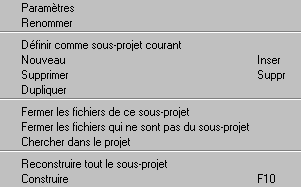

Toute la gestion du projet et des sous-projets peut se faire depuis l'arbre du projet.
Sur chaque élément de l'arbre, un menu contextuel peut être appelé par un clic avec le bouton droit. Ce menu comporte la liste des opérations qu'il est possible de faire à partir de cet endroit.
Par exemple, le clic droit sur un sous-projet ouvre le menu suivant :

Remarque
La gestion du projet peut également être faire dans le menu Projet de la barre de menus.